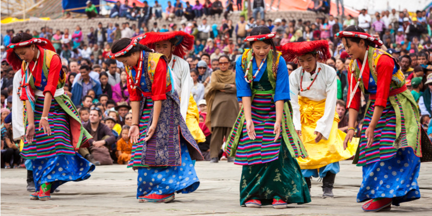

Welcome to Jammu and Kashmir!

Jammu and Kashmir, a region in northern India, is renowned for its diverse and rich cultural heritage, shaped by
its picturesque landscapes and historical influences. The culture of Jammu and Kashmir is a beautiful amalgamation
of Hindu, Muslim, and Buddhist traditions, reflecting the region's pluralistic ethos. The vibrant festivals like
Eid, Diwali, Vaisakhi, and Navroz are celebrated with great enthusiasm, showcasing the region's religious and
cultural diversity. Kashmiri cuisine, known for its aromatic spices and rich flavors, features iconic dishes such
as Rogan Josh, Dum Aloo, and the traditional Wazwan feast, a multi-course meal that is a culinary art form.
Traditional music and dance forms, like Rouf and Hafiz Nagma, along with the soulful Sufi music, add to the
cultural tapestry. The region is also famous for its exquisite handicrafts, including Pashmina shawls, carpets,
and papier-mâché items, which highlight the skilled craftsmanship of the local artisans. The people of Jammu and
Kashmir, known for their warmth, hospitality, and resilience, embody a rich cultural legacy that thrives amidst
the stunning beauty of their surroundings, from the verdant valleys of Kashmir to the majestic mountains of Jammu.